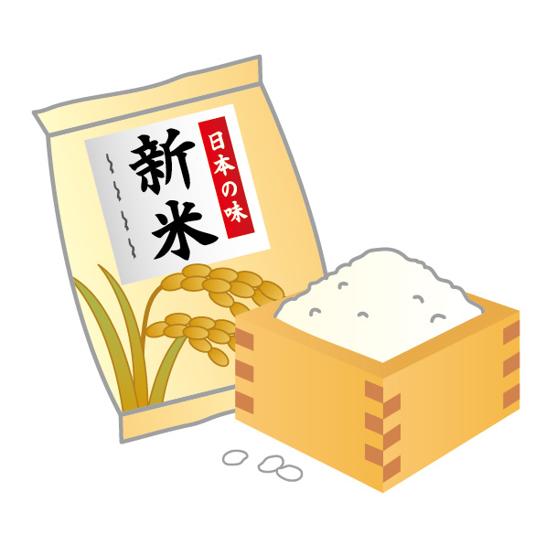
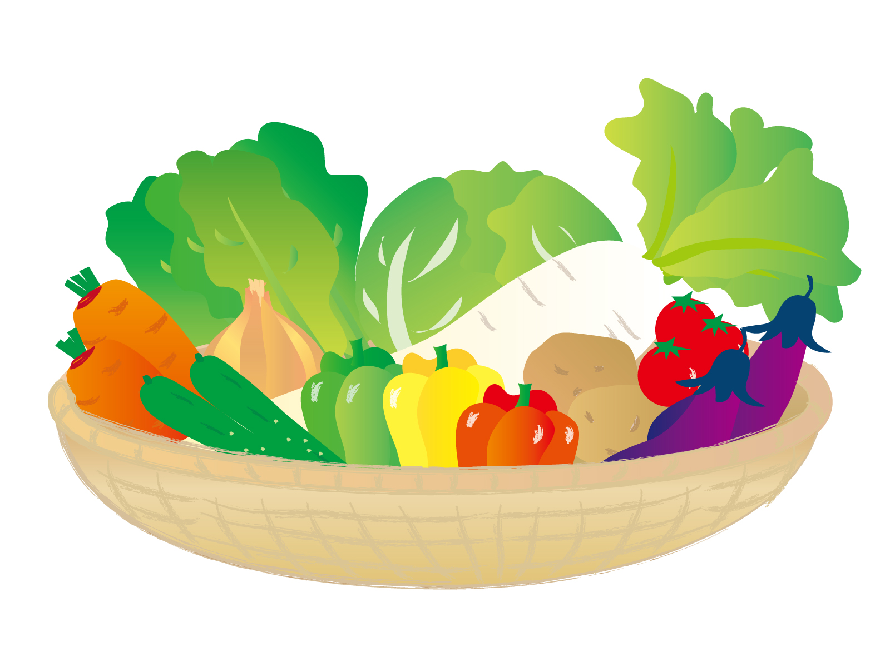
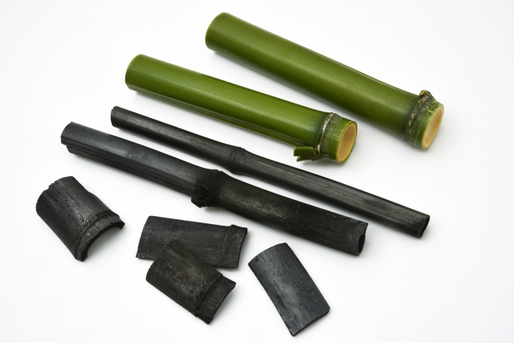

岡本農園
Okamoto Farmer
風土記に記載されている出雲国。玉造温泉で有名な島根県松江市玉湯町。
夏は自然の蛍が飛び交う程に水がきれいな土地で低農薬にて丹精込めて作りました。
さらに、精米機を通したクリーン白米は、洗う時の水が少なくて済むのが特徴です。
ブレンド米として色々な品種を混ぜて販売しているお米もあります。岡本農園のお米は、純度100%のコシヒカリです。
炊きたては、それ程変わりはありませんが、冷めた時も美味しくいただけるのは純度100%のコシヒカリです。
その他、季節の農産物、山の恵みの山菜、自然の宝を育ませて皆様の食卓を豊かにしたいと日々邁進して参ります。
CONTENT

Rice
毎年20トンのお米を作っています。

vegetable
自然のお宝である、たけのこ、ふきのうとう、などを販売しています。

Natural treasure mountain
今シーズンから、竹炭の販売を致します。消臭効果抜群の商品をお届け致します。
ABOUT
岡本農園には、夢があります。
日本一の農家になりたいと思っています。
産地直送でみなさまの食卓が豊かになるよう日々邁進して参ります。
ご質問を頂ける方はCONTACTに連絡先を記載していますので、ご連絡をお待ちしております。
CONTACT
お問い合わせは、
SNSかメールにてお願いいたします。